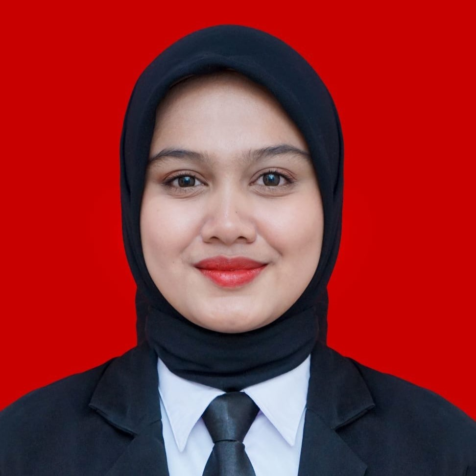

S1 Ekonomi Pembangunan | Universitas Tidar
Sebagai lulusan baru dengan IPK 3.59/4.00, saya tertarik untuk mengembangkan karier di bidang administrasi, pelayanan, dan operasional. Saya memiliki pengalaman magang di DPMPTSP serta aktif mengikuti organisasi.
Berbekal pengalaman tersebut, saya telah membentuk sikap disiplin, bertanggung jawab, dan adaptif. Saya mampu bekerja secara mandiri maupun tim, serta berkomitmen untuk terus belajar agar memberikan kontribusi positif terhadap perusahaan.